Типы данных
Содержание
Общий обзор (Overview)
Тип данных - основной артефакт ECM, описывающий объект. В типе данных определяются метаданные, которые будет содержать объект, статусы жизненного цикла, роли, которые могут работать с объектом. Тип данных связан с формой и журналом.
Типы ECOS - артефакты с типом model/type.
В ECOS на основе типа данных создаются следующие артефакты:
Иерархия системных типов и логика их наследования
У каждого типа данных должен быть родитель. Базовые типы данных:
Кейс (case) - тип для хранения записи, изменяемой во времени посредстовом связи ее с бизнес-процессом (не явлется статической). Маркером того, что тип будет кейсом является необходимость прикрепления к нему процесса и указания при создании общей информации, атрибутов, ролей, статусов и матрицы прав.
Справочник (datalist) - тип для хранения наборов бизнес-данных, которые будут использоваться как статические данные для документов, не участвующие непосредственно в бизнес-процессах. Маркером того, что тип будет даталистом является указание при его создании только общей информации и перечня атрибутов.
В качестве родителя можно использовать созданный ранее тип данных.
Родительские атрибуты попадают в список наследуемых атрибутов (Атрибуты) и по флагу «Наследовать» можно наследовать форму, действия, шаблон нумерации.
Описание перехода к разделу через интерфейс
Для просмотра существующих типов и их редактирования создан журнал Типы данных (Раздел администратора - Модель - Типы данных):
По умолчанию в журнале типов данных системные типы не отображаются.
Для отображения ТОЛЬКО системных типов перейдите в настройки таблицы, выставите Системный тип - Да:
Варианты получения экземпляра типа
Тип данных можно создать или загрузить уже созданный в систему.
Создание
Подробнее см. раздел ниже
Для создания типа данных необходимо нажать + - Создать новый тип:
Откроется форма создания типа данных:
Загрузка
Для загрузки созданного типа данных необходимо нажать + - Загрузить тип:
Файл формата .yaml
Пример описания типа
id: hr-offices-type
name:
ru: Офисы
storageType: ECOS_MODEL
parentRef: emodel/type@data-list
formRef: uiserv/form@hr-offices-form
journalRef: uiserv/journal@hr-offices-journal
inheritActions: false
defaultCreateVariant: true
model:
attributes:
- id: officesCode
name:
ru: Код
- id: officesCity
name:
ru: Город
- id: officesAddress
name:
ru: Адрес
Доступные действия с записью
В журнале администратору с каждой записью доступен стандартный набор действий:
скачать в виде json-файла;
удалить;
открыть карточку в соседней вкладке;
открыть на редактирование;
редактировать json-файл;
копировать.
Создание нового типа
Форма создания нового типа состоит из следующих вкладок:
Основные – основные характеристики типа данных.
Атрибуты– характеристика, определяющая свойства объекта.
Аспекты– функционал расширения типа данных без изменения самого типа.
Роли – роли, которые участвуют в работе с объектом.
Статусы– статусы, по которым объект будет перемещаться по мере выполнения бизнес-процесса.
Стадии– этапы жизненного цикла документа.
Варианты создания – настройка поддержки выбора варианта создания после выбора типа
Связи – настраиваются для отображения, добавления и удаления связанных объектов в виджете «Связи»» на карточке объекта.
Конфигурация контента – настройки работы с содержимым (контентом).
Основные
Родитель, форму, журнал, указанные по умолчанию можно изменять.
п/п |
Наименование |
Описание |
Пример заполнения |
|---|---|---|---|
1 |
Id (обязательное) |
уникальный идентификатор типа |
test_type (snake case) |
2 |
Имя |
локализованное название компонента |
Тестовый тип |
3 |
Шаблон отображения имени |
локализованный шаблон заголовка записи, отображаемого при запросах ее локализованного имени (расширеный вариант для параметра п.2).
Поддерживает выражения с использованием данных записи
|
Тестовый тип № ${counter} |
4 |
Описание |
локализованное описание данного типа ECOS (необязательно). |
Тип, используемый для тестовых целей |
5 |
Родитель |
тип данных, на основании которого, создается текущий. |
выбирается из списка предлагаемых:
Остальное – иные созданные ранее типы данных.
|
6 |
Форма |
ссылка на форму, которая будет открываться при инициировании создания записи данного типа.
Наследование формы позволяет не заполнять в дочернем типе поле «форма», это поле в итоге заполнится значением из родительского типа.
|
есть вариант создания автоматически по умолчанию (Форма по умолчанию), создания вручную (Создать-Создать форму), загрузки (Создать-Загрузить форму). |
7 |
Журнал |
ссылка на журнал, который будет отображать записи данного типа |
есть вариант создания автоматически по умолчанию (Журнал по умолчанию), создания вручную (Создать-Создать журнал), загрузки (Создать-Загрузить журнал). |
8 |
Шаблон нумерации |
шаблон нумерации См. Шаблоны нумерации |
выбирается из списка предлагаемых |
9 |
Форма дополнительной конфигурации типа |
[уточнить] |
|
10 |
Журнал |
Отображать библиотеку документов |
|
11 |
Действия |
Cсылки на действия, которые будут доступны в соответсвующем виджете всех записей данного типа, а также в журнале, связанном с типом (подробнее о действиях).
Возможно наследование дейсвтий от родительского или же наоборот его запрет (управляется проставлением соответсвующего флага)
|
выбирается из списка предлагаемых |
12 |
Дополнительные свойства |
[уточнить] |
|
13 |
Тип источника данных |
хранилище, в которое будут заноситься записи данного типа (название отражает не использумую БД, а сервис, в БД которого будут направляться запросы). Значение «По умолчанию» означает, что для места хранения будет использоваться «ID источника данных (14)» из текущего или родительского типа и при этом не будет никакого автоматического создания хранилища. Т.е. при типе источника данных «По умолчанию» предполагается, что место хранения уже подготовлено заранее. |
выбирается из списка предлагаемых. |
14 |
ID источника данных |
иденифтикатор источника для случая, когда используется хранилище не встроенное по умлочанию в систему (в случае когда в п.14 выбран выриант Custom) |
test_datasource (snake case) |
15 |
Канбан доска |
выбор канбан-доски См. Канбан-доска |
Создание и редактрование журнала, формы из типа данных
Рассмотрим на примере журнала:
При нажатии на «Создать-создать журнал» открывается форма создания журнала:
При нажатии на «Создать-загрузить журнал» открывается форма загрузки журнала:
Функциональность реализована в настройках компонента Select Journal во вкладке «Кастомные»
При нажатии на «Изменить» открывается журнал, содержащий все созданные в системе журналы:
При нажатии на Редактировать открывается форма редактирования соответствующей выбранной сущности на новой вкладке.
Атрибуты
п/п |
Наименование |
Описание |
Пример заполнения |
|---|---|---|---|
1 |
Id |
идентификатор поля, по которому оно будет доступно на форме, в журнале. |
testAttribute (camelCase) |
2 |
Имя |
имя поля для отображения пользователю. |
Тестовый атрибут |
3 |
Тип |
тип поля. Поддерживаемые типы |
выбирается из списка предлагаемых. По умолчанию выставляется text. |
4 |
Множественный |
множественный ввод разрешен |
флаг |
5 |
Обязательный |
поле обязательно к заполнению |
флаг |
6 |
Настройка прав для атрибута |
функционал, позволяющий произвести настройку прав доступа в отношении «Роль-Статус» для конкретного атрибута. См. подробно |
выбирается состояние доступа атрибута на пересечении сетки «Роль-Статус» |
7 |
Вычисляемые атрибуты |
функионал, позволяющий установить выражение-зависимость, позволяющий гибко создавать производные атрибуты См. подробно |
настройка конфигурации в зависимости от типа и сложности вычисления атрибута |
8 |
Наследуемые атрибуты |
отображение значений наследумых от родительского типа атрибутов в соответсвии с п. 1, 2 и 6 (при условии что родительский тип задан и имеет атрибуты) |
отсутствует |
9 |
Настройка прав для типа данных |
функционал, позволяющий произвести настройку прав доступа документа в отношении «Роль-Статус».
А также выгрузить и удалить полную схему прав (включая настройки из п.6) См. подробно
|
выбирается состояние доступа документа на пересечении сетки «Роль-Статус» |
Возможные типы атрибутов:
Text |
текст |
MLText |
текст с локализацией. Содержание меняется в зависимости от выбранной локализации. |
Person |
пользователь из оргструктуры |
Group |
группа пользователей из оргструктуры |
Authority |
пользователь или группа. Это по сути базовый тип и для пользователей и для групп |
Association |
связь с другой сущностью
По кнопке «Настроить» выбрать тип данных и при необходимости выставить признак дочерней ассоциации:
|
Number |
число |
Boolean |
булево значение да/нет; |
Date |
дата |
DateTime |
дата с временем; |
Content |
содержимое. Как правило поля с этим типом используются для сохранения больших объемов данных. Например - содержимое документа. |
JSON |
текстовый, структурированный формат данных. Например: {"some": "data"}
|
Binary |
массив байт. Похож на контент, но намного проще.
Не рекомендуется здесь хранить более 1мб данных.
|
Вычисляемые атрибуты

Тип - тип вычисляемого атрибута. Поддерживаются:
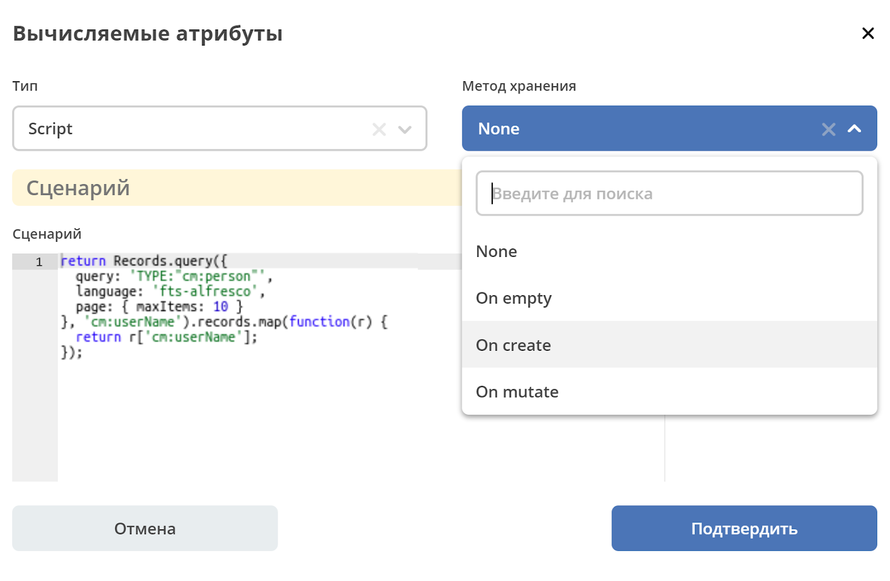
Script - вычисление атрибута на основе
javascript'а;Attribute - вычисление атрибута на основе другого атрибута (можно делать алиас на глубоко вложенный атрибут. Например:
idocs:counterparty.idocs:fullOrganizationName?str);Значение - константное значение;
Counter - значение будет генерироваться по счетчику при создании документа и не меняться со временем.
Template - шаблонная строка. Можно использовать вставки вида ${…}. Например:
${someAttribute?str}. Вместо данного плейсхолдера будет подставлено значение укзанного атрибута;Метод хранения - тип сохранения. Определяет, нужно или нет сохранять вычисленное значение и если да, то в какие моменты. Возможные значения:
None - сохранение не нужно. При каждом обращении вычисляем значение заново;
On empty - сохранять вычисленное значение только если сохраненное значение отсутствует (т.е. при запросе значения вернулся
null);On create - сохранять вычисленное значение только после создания. Последующие мутации никак данный атрибут не затронут и он будет работать как обычный атрибут.
On mutate - сохранять вычисленное значение при каждой мутации. В случае использования Records API для изменения записи гарантируется актуальность значения.
Возможности атрибута с типом script
Объекты в глобальной области видимости:
Records - адаптер для RecordsService; |
Методы:
|
value - текущий документ; |
Свойства
Методы:
Пример:
Вычислить атрибут на основе трех других:
|
log - логгер. |
[уточнить] |
Предупреждение
Прикладных сервисов в контексте скрипта нет.
Матрица прав
Матрица прав - таблица, которая показывает, какими правами обладает конкретная роль на отдельные виды данных.
Права могут быть настроены отдельно на документ, отдельно на его атрибуты.
Настройка прав
Настройка прав осуществляется на форме редактирования типа во вкладке Атрибуты. Редактор доступен только в Enterprise версии ECOS.
Права на документ:
Права на атрибут:
Вычисление прав
Вычисление прав для PermissionsDef (документа или атрибута) делится на два этапа:
1. Применение матрицы прав <Роль, <Статус, Уровень_прав>>. Есть 3 уровня прав:
NONE - нет прав;
READ - чтение;
WRITE - чтение и запись.
2. Применение правил. Правила нужны в случаях, когда логика распределения прав не укладывается в простую матрицу. Примеры:
Если есть 2 состояния документа в одном статусе, но с разными правами;
Если уровень прав зависит от атрибутов документа.
Значения, которые вычисляются на этапах 1 и 2 должны быть абсолютными. Т.е. если у нас есть конфигурация прав, то она на 100% описывает текущий уровень прав и не предполагает наличие дополнительных механизмов.
Роли и статусы берутся из конфигурации типа. Если какой-то роли или статуса нет в конфигурации типа, то наличие этих сущностей в конфиге прав игнорируется.
Если для роли, статуса или атрибута нет настройки прав, но они присутствуют в типе, то по умолчанию выставляется право только на чтение.
Если у документа выставлен статус или есть роль, которые отсутствуют в конфиге типа, то права для них по умолчанию пустые (нет возможности даже читать).
Пограничные условия
Данные условия относятся к настройкам матрицы без системных статусов и ролей.
Статус есть в типе |
Статус есть в матрице |
Роль есть в типе |
Роль есть в матрице |
Уровень прав |
|---|---|---|---|---|
Да |
Да |
Да |
Да |
Из матрицы |
Да |
Да |
Да |
Нет |
Чтение |
Да |
Да |
Нет |
Да |
Нет прав |
Да |
Да |
Нет |
Нет |
Нет прав |
Да |
Нет |
Да |
Да |
Чтение |
Да |
Нет |
Да |
Нет |
Чтение |
Да |
Нет |
Нет |
Да |
Нет прав |
Да |
Нет |
Нет |
Нет |
Нет прав |
Нет |
Да |
Да |
Да |
Нет прав |
Нет |
Да |
Да |
Нет |
Нет прав |
Нет |
Да |
Нет |
Да |
Нет прав |
Нет |
Да |
Нет |
Нет |
Нет прав |
Нет |
Нет |
Да |
Да |
Нет прав |
Нет |
Нет |
Да |
Нет |
Нет прав |
Нет |
Нет |
Нет |
Да |
Нет прав |
Нет |
Нет |
Нет |
Нет |
Нет прав |
Системные статусы и роли
При необходимости можно настроить в типе системные статусы и роли. Для этого достаточно указать ID равным одному из предопределенных значений:
Роли:
EVERYONE - виртуальная роль, к которой относятся все пользователи. Assignees у такой роли всегда пустые, но если роль EVERYONE по матрице получает права, то они распространяются на всех пользователей в системе.
Статусы:
EMPTY - пустой статус. Полезен для приватных сущностей, которые недоступны на чтение всем пользователям в системе. Пустой статус может быть в случае если процесс для кейса не найден или операция старта процесса еще не завершилась;
ANY - любой статус. Вариант использования: для справочников можно задать права для ANY и EVERYONE на чтение, а для изменения записей завести отдельную группу.
Модель описания прав
Основная логика находится в библиотеке ecos-model-lib.
Конфигурация прав хранится в микросервисе ecos-model.
TypePermsDef
id: String // Идентификатор настроек. Уникальный в пределах системы
typeRef: RecordRef // Тип ECOS, к которому относятся настройки прав
permissions: PermissionsDef // Настройка прав на документ
attributes: Map<String, PermissionsDef> // Настройка прав на атрибуты
PermissionsDef
matrix: Map<String, Map<String, PermissionLevel>> // Матрица прав <Роль, <Статус, Уровень_прав>>.
rules: List<PermissionRule> // Дополнительные правила для гибкой настройки
PermissionLevel (enum)
NONE // нет прав
READ // права на чтение
WRITE // права на чтение и запись
PermissionRule
roles: Set<String> // Роли, для которых применяется правило
permissions: Set<String> // Список прав
statuses: Set<String> // Статусы, в которых данное правило применимо. Пустой список - любой статус
condition: Predicate // Условие, по которому данное правило применимо в формате предиката (см. Язык предикатов).
type: RuleType // Тип правила
RuleType (enum)
ALLOW - разрешение. Если правило активно, то permissions добавляются для указанных ролей
REVOKE - отбирание прав. Если правило активно, то permissions убираются из списка уже существующих прав у ролей
Наследование прав
При поиске матрицы прав учитывается иерархия типов ECOS. При этом ищется первая не пустая конфигурация и дальше поиск прекращается. Т.е. никакого объединения настроек прав из разных типов не происходит.
Пример конфигурации
id: "2a5c3f00-06d5-4b62-8192-1b9116f12db4"
typeRef: "emodel/type@contracts-cat-doctype-contract"
permissions
matrix:
confirmers:
approval: WRITE
reworking: NONE
initiator:
approval: READ
reworking: WRITE
scan-man:
approval: WRITE
reworking: NONE
rules: []
attributes::
cm:name:
matrix:
confirmers:
approval: WRITE
reworking: NONE
initiator:
approval: READ
reworking: WRITE
scan-man:
approval: WRITE
reworking: NONE
rules: []
cm:title:
matrix:
confirmers:
approval: WRITE
reworking: NONE
initiator:
approval: READ
reworking: WRITE
scan-man:
approval: WRITE
reworking: NONE
rules: []
Аспекты
Выберите спект из списка. По кнопке «Настроить» можно отредактировать конфигурацию - открывается форма, настроенная для аспекта.
Атрибуты из добавленных аспектов будут доступны в создаваемом типе данных.
Роли
п/п |
Наименование |
Описание |
Пример заполнения |
|---|---|---|---|
1 |
Id |
уникальный идентификатор роли |
myTestRole (camel case) |
2 |
Название логики |
имя роли |
Тестовая роль |
3 |
Участники роли |
статическое заполнение роли.
Выбор группы и/или отдельных пользователей из оргструктуры, которые будут выполнять функцию данной роли.
|
выбирается из списка оргуструктуры организации |
4 |
Атрибуты |
динамическое заполнение роли. Выбор атрибута типа, на который будет ссылаться роль для получения назначаемых пользователей. |
выбирается из списка предлагаемых атрибутов |
5 |
Динамическая роль |
динамическое заполнение роли.
Установление произвольной гибкой логики, по которой будет произведено вычисление состава пользователей роли.
|
настройка конфигурации в зависимости от сложности и набора заивисимых данных для вычисления состава роли |
Примечание
Все назначенные роли (статические, динамические, атрибутивные) объединяются.
Статусы
п/п |
Наименование |
Описание |
Пример заполнения |
|---|---|---|---|
1 |
Id |
уникальный идентификатор статуса |
testStatus (camel case) |
2 |
Название логики |
имя статуса |
Тестовый статус |
На форме документа статус может быть отражен следующим образом:

{kind=link}
{kind=link}
{kind=link}
{kind=link}
{kind=link}
{kind=link}
{kind=link}
{kind=link}
{kind=link}
{kind=link}
{kind=link}
{kind=link}
{kind=link}
{kind=link}
{kind=link}
{kind=link}
{kind=link}
{kind=link}
{kind=link}
{kind=link}
{kind=link}
{kind=link}
{kind=link}
{kind=link}
В компоненте Text field:
название поля может быть любым,
имя свойства - _status,
скрыть и заблокировать на ввод, если необходимо не отображать на форме.
Стадии
Стадии — этапы жизненного цикла документа. В каждую стадию входит один или несколько статусов.
{kind=link}
Прежде, чем приступить к работе над стадиями, необходимо заполнить Статусы.
п/п |
Наименование |
Описание |
Пример заполнения |
|---|---|---|---|
1 |
Название стадии |
Наименование стадии |
testStage (camel case) |
2 |
Статусы |
Перечень статусов, входящих в стадию |
Выбирается из списка предлагаемых статусов |
Каждый статус может быть назначен только на одну стадию:
{kind=link}
Стадии отображаются в виджете виджете «Стадии»
Варианты создания
Настройка поддержки выбора варианта создания после выбора типа настраиваются на вкладке Варианты создания
{kind=link}
п/п |
Наименование |
Описание |
Пример заполнения |
|---|---|---|---|
1 |
Id |
уникальный идентификатор варианта создания |
testCreate (camel case) |
2 |
Имя |
имя поля для отображения пользователю. |
Тестовый статус |
3 |
Форма |
имя поля для отображения пользователю. |
Тестовый статус |
4 |
Разрешен для |
пользователь или группа, для которых разрешен функционал. |
|
5 |
Дополнительно |
дополнительные настройки. |
{kind=link}
{kind=link}
Связи
п/п |
Наименование |
Описание |
|---|---|---|
1 |
Id |
идентификатор связи. Обязательное поле (если не заполнено, то сервер такую связь не сохраняет).
Это поле нужно для:
1. Перезаписывания конфигурации связи в дочернем типе. Т.е. если мы в дочернем типе укажем тот же ID, то по сути перезатрем конфигурацию связи
2. Указание атрибута, в котором связь сохранится (если не задано значение в поле «Атрибут»)
|
2 |
Имя |
имя связи для отображения в интерфейсе |
3 |
Атрибут |
в который новые связи будут добавляться и из которого будут загружаться.
Как правило это ассоциация из вкладки Атрибуты. Если не задано то используется значение поля ID.
|
4 |
Направление связи |
определяет какие связи отображать в виджете связей. Любая связь строится по принципу SOURCE -> TARGET
- SOURCE - обратное к target связь у источника. При открытии карточки TARGET мы увидим нашу связь. При открытии карточки SOURCE мы ничего не увидим.
- TARGET - связь отображается только у документа, который хотим привязать. При открытии карточки TARGET мы ничего не увидим. При открытии карточки SOURCE мы увидим нашу связь.
- BOTH - двухсторонняя связь. И на карточке SOURCE и на карточке TARGET увидим нашу связь.
|
5 |
Связанный тип |
тип сущностей, с которыми мы можем связать нашу ноду |
6 |
Журналы |
список журналов, которые можно использовать для создания новой связи. Если необходимо создавать связи не с одним определенным типом. |
{kind=link}
Для добавления возможности связать документ с простой ссылкой (Id - webLinks, Направление связи - TARGET):
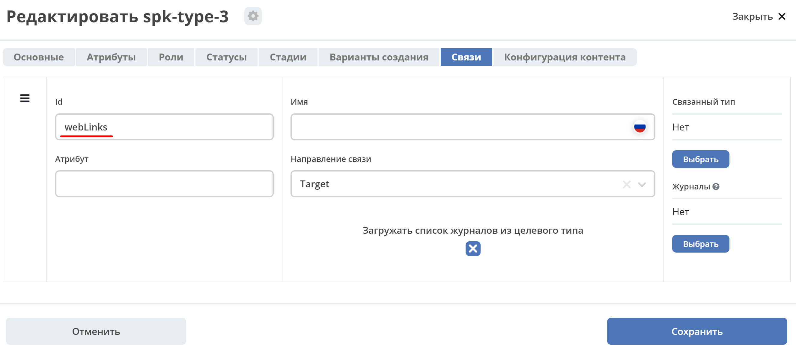{kind=link}
Связи (associations) настраиваются для отображения, добавления и удаления связанных объектов в виджете Формы «Связи документов» на карточке объекта.
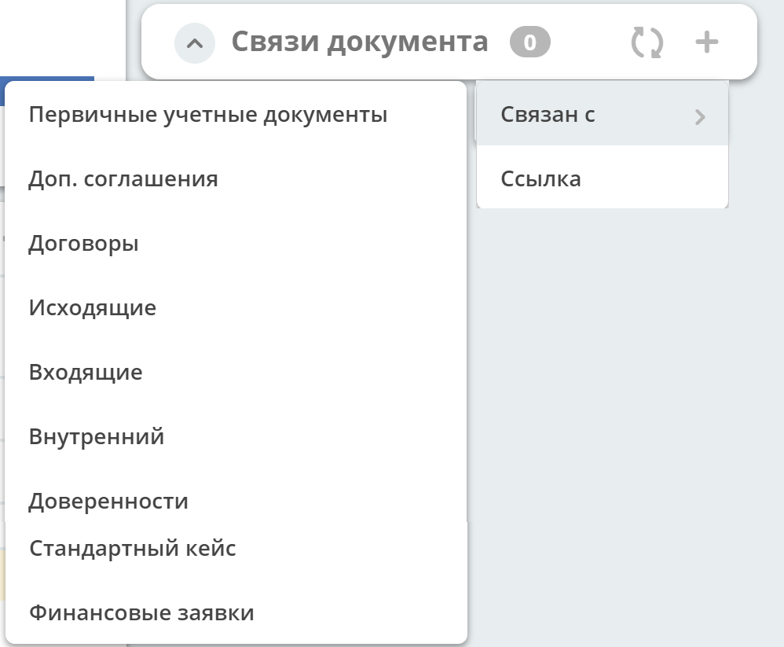{kind=link}
Конфигурация контента
Работа с контентом в ECOS осуществляется с использованием атрибутов ECOS типа с типом «Содержимое».
Атрибут _content
Атрибут _content служит для доступа к основному контенту записи без необходимости узнавать в каком именно атрибуте хранится контент. По умолчанию атрибут с контентом - content, но этот атрибут можно переопределить в типе во вкладке Конфигурация контента.
При загрузке нового контента в свойство “_content” имя содержимого записывается в свойство name сущности (если оно определено в атрибутах).
Контент в свойстве _content всегда имеет имя, которое совпадает с именем сущности (оно переопределяет имя самого контента).
Настройка типа
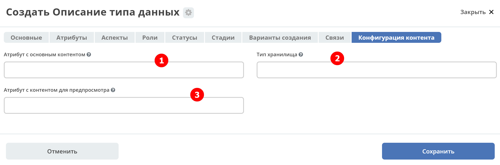{kind=link}
п/п |
Наименование |
Описание |
|---|---|---|
1 |
Атрибут с основным контентом |
атрибут, в котором находится контент, который доступен через свойство “_content”.
Может быть сложным с указанием свойства из связанной сущности. Например - “linkedRecord.content”.
Если это поле оставить пустым, то основным полем с контентом будет “content“.
|
2 |
Тип хранилища |
атрибут, в котором находится контент, который будет использоваться для предпросмотра документа.
Если не указать значение, то используется “Атрибут с основным контентом”
|
3 |
Атрибут с контентом для предпросмотра |
место где будет сохраняться контент.
По умолчанию “local“, что в свою очередь означает, что контент будет сохраняться в БД в той же схеме, что и таблица сущностей нашего типа.
Другие типы хранилища пока не поддерживаются.
|
Java
Для работы в java с контентом следует использовать интерфейс EcosContentApi:
Загрузка:
EntityRef tempFile = contentApi.uploadTempFile()
.withMimeType("application/pdf")
.writeContent((writer) -> writer.writeBytes(imageContent1));
ObjectData attributeForMutation = ObjectData.create()
.set("customContentAtt", tempFile);
// Создание
EntityRef newFileWithContent = recordsService.create("emodel/test", attributeForMutation);
// Обновление
recordsService.mutate(newFileWithContent, attributeForMutation);
Чтение:
EntityRef ref = EntityRef.valueOf("emodel/test@localId");
EcosContentData contentData = contentApi.getContent(ref, "attributeWithContent");
if (contentData == null) {
throw new RuntimeException("Content is null");
}
// При работе с файлами, максимальный размер которых может быть более ~20мб
// чтение контента в массив байт следует по возможности избегать. Иначе есть риск получить OutOfMemoryError
byte[] bytes = contentData.readContent(reader -> {
try {
return IOUtils.toByteArray(reader);
} catch (Exception e) {
throw new RuntimeException(e);
}
});
Отображаемое имя сущности
Есть несколько сценариев для работы с отображаемым именем сущности.
Если необходимо, чтобы имя сущности всегда формировалось по шаблону, то следует использовать поле dispNameTemplate в типе;
Если необходимо, чтобы именем сущности можно было управлять, то следует в список атрибутов добавить атрибут с id = ‘name“. Система автоматически будет использовать это поле для отображаемого имени (скаляр ?disp в Records API)
Можно вывести поле name на форму и тогда пользователь сможет сам им управлять
Можно поле name не выводить на форму, но позволить пользователю работать с “_content” атрибутом. В этом случае при загрузке нового контента автоматически будет изменяться поле name и => отображаемое имя.
Автоматически сгенерированные формы и журналы в типе данных
Для типа данных доступны автоматически генерируемая форма и журнал:
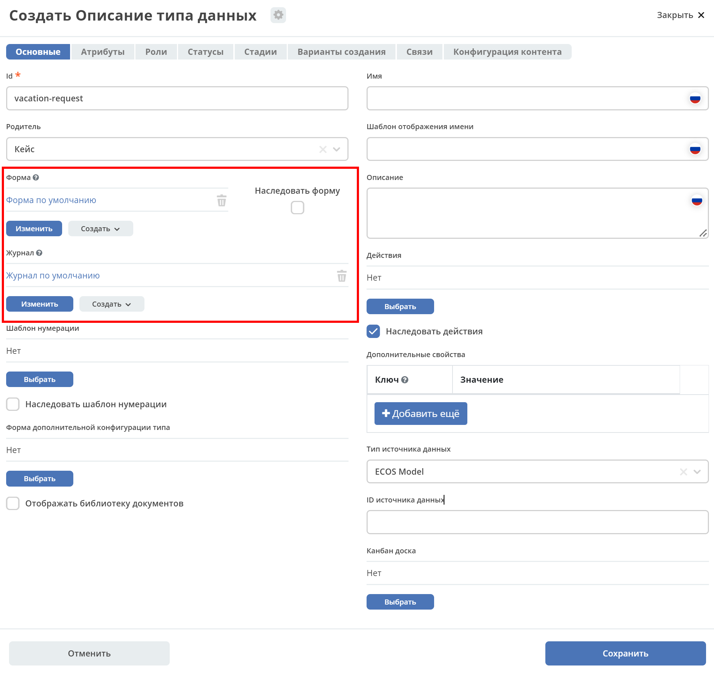{kind=link}
Рассмотрим подробнее на примере. Заполним атрибуты типа данных:
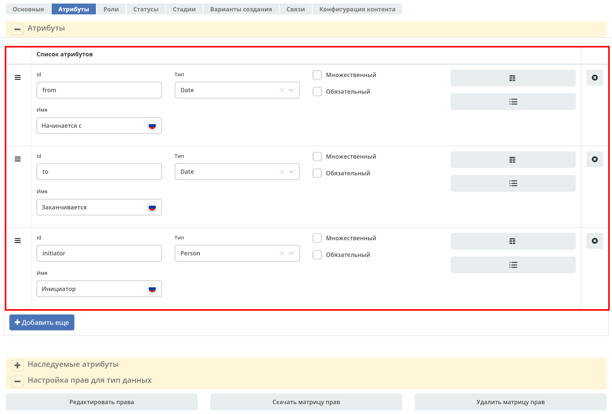{kind=link}
На форме типа после создания становятся доступны действия с автосгенерированными формой и журналом:
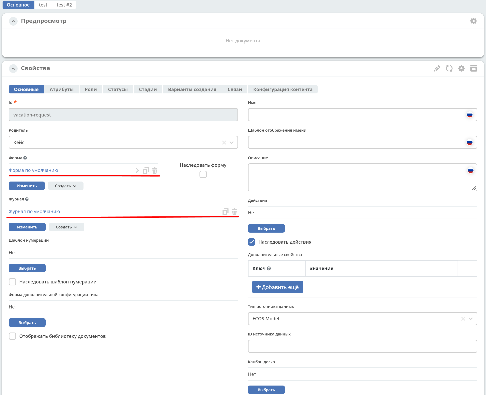{kind=link}
Журнал
Журнал получает идентификатор – type$idтипа, название - как и тип данных, и может полноценно использоваться в системе – может быть добавлен в меню:
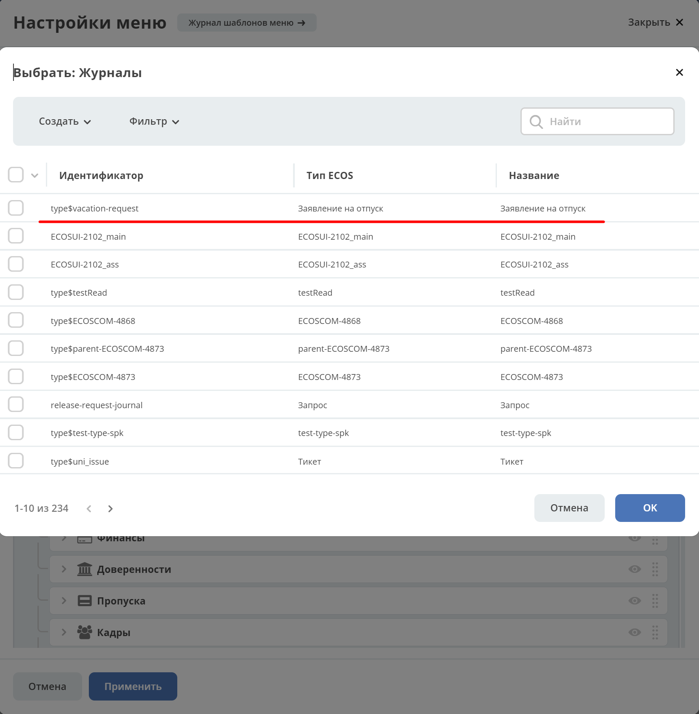{kind=link}
Перейти в журнал и создать элемент журнала:
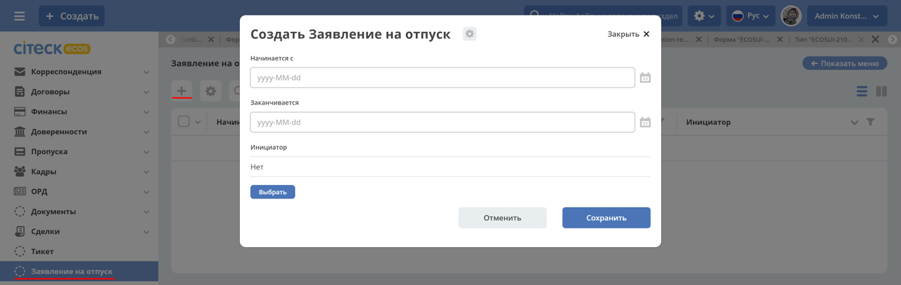{kind=link}
Перейдем в журнал «Журналы»:
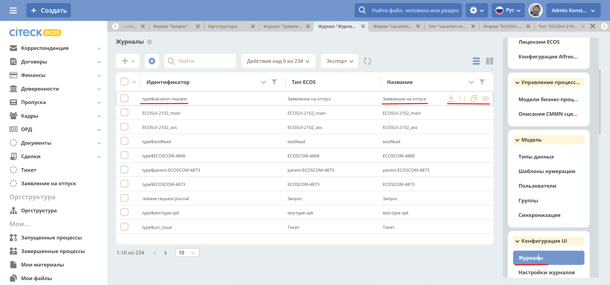{kind=link}
Автосгенерированный журнал нельзя редактировать, т.к. он генерируется на лету при каждом обращении.
Для журнала доступны действия:
скачать,
редактировать json,
копировать,
открыть журнал в соседней вкладке.
По нажатию на глаз открывается дашборд для просмотра свойств сгенерированной журнала:
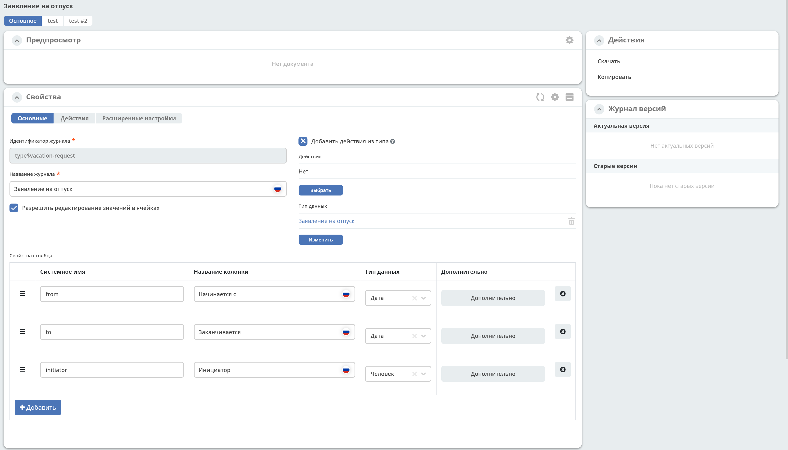{kind=link}
Форма
Для созданного типа данных для формы доступны следующие действия:
Тестировать форму - как будет выглядеть форма в итоговом виде:
Для просмотра формы необходимо нажать Submit:
На форме присутствуют поля в соответствии с данными и типом, указанным в атрибутах.
|
|
Автосгенерированную форму можно скопировать, чтобы присвоить идентификатор и отредактировать под себя. См. подробнее ниже
|
{kind=link}
{kind=link}
{kind=link}
{kind=link}
Перейдем в журнал «Формы».
Форма получает идентификатор – type$idтипа, название - как у типа данных.
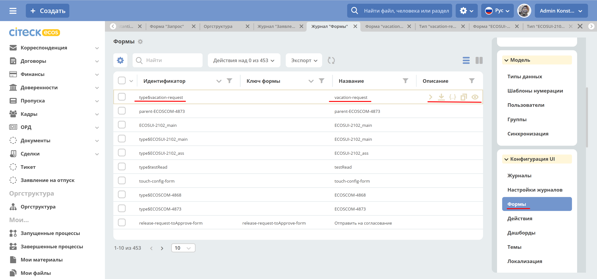{kind=link}
Автосгенерированную форму нельзя редактировать.
Для формы доступны действия:
тестировать форму,
скачать,
редактировать json,
копировать,
открыть форму в соседней вкладке.
По нажатию на глаз открывается дашборд для просмотра свойств сгенерированной формы:
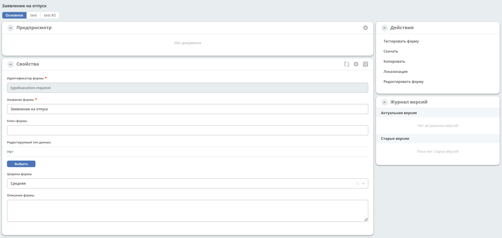{kind=link}
Изменение автосгенерированной формы
Если необходимо изменить форму. Например, чтобы в форме инициатор выбирался автоматически как текущий пользователь.
Для этого необходимо скопировать форму из журнала «Формы», или карточки типа данных.
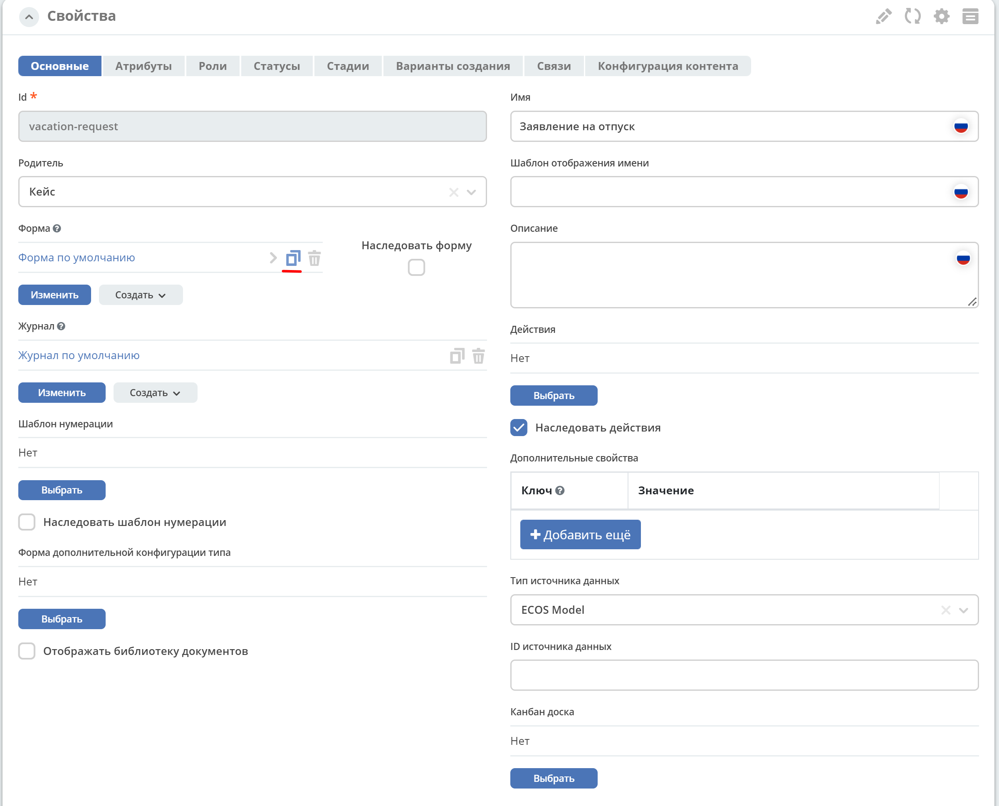{kind=link}
Переименовать:
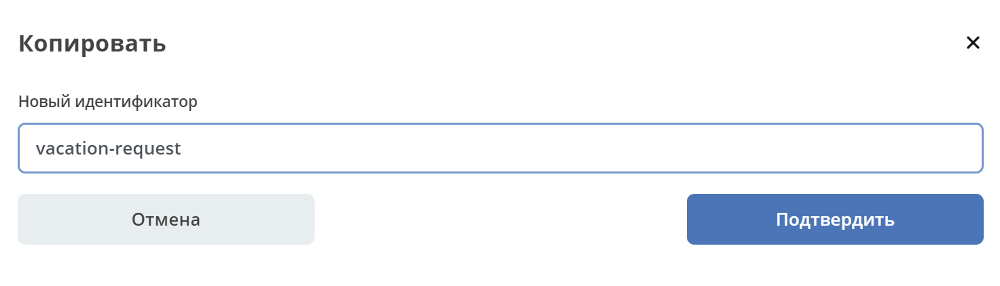{kind=link}
В типе данных проставляется данная форма и становятся доступны действия, включая редактирование:
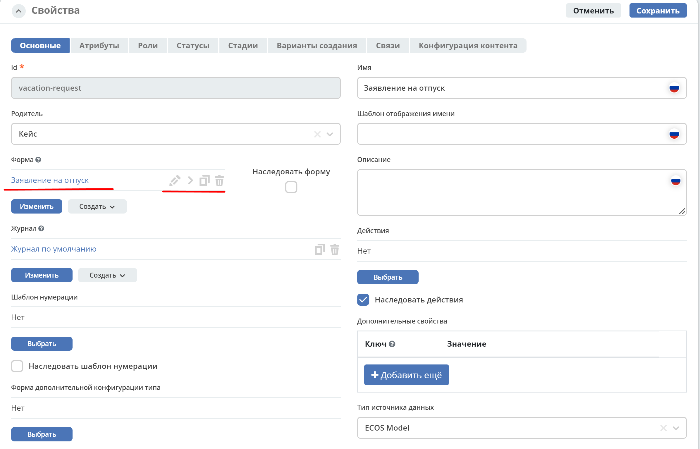{kind=link}
Нажать «Редактировать»:
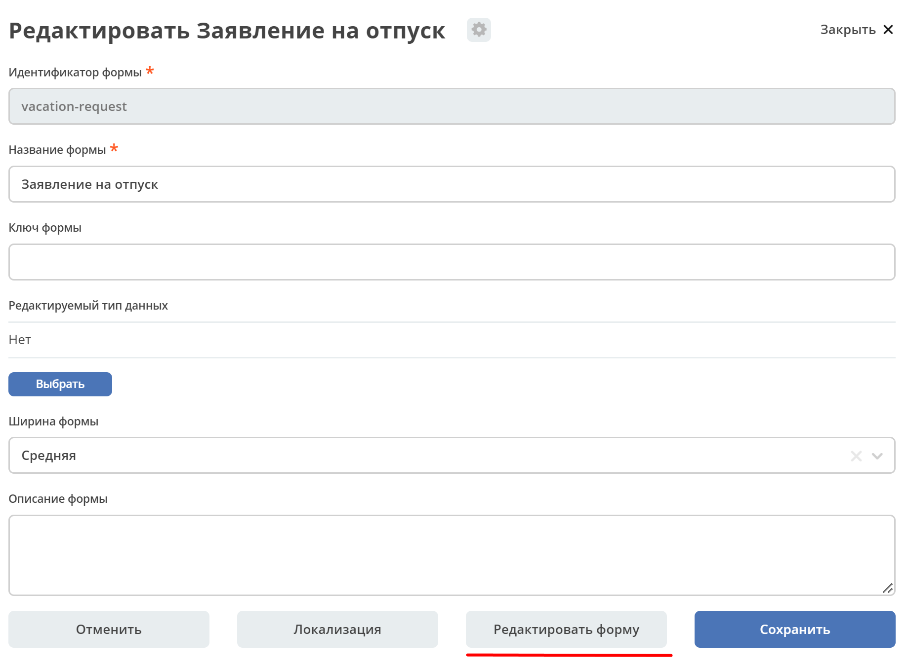{kind=link}
Далее перейти к редактированию компонента:
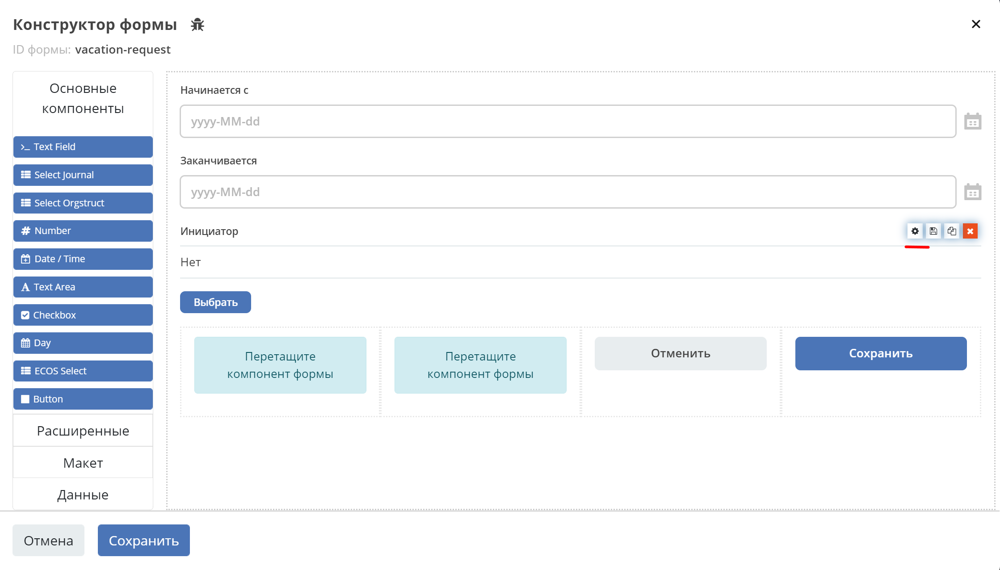{kind=link}
На вкладке «Кастомные» выставить чекбокс «Текущий пользователь по умолчанию», сохранить компонент:
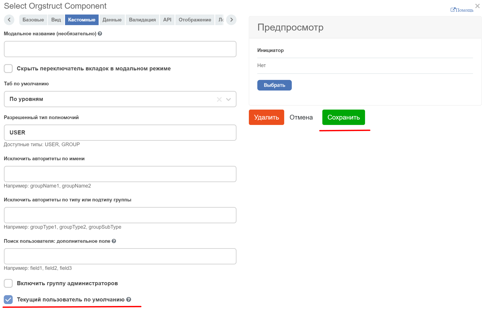{kind=link}
Далее сохранить форму, тип данных.
В журнале «Формы» при этом пропадет автосгенерированная форма, т.к. она не выбрана по умолчанию в типе данных.
И добавлена созданная вручную, для которой доступны и редактирование, и удаление:
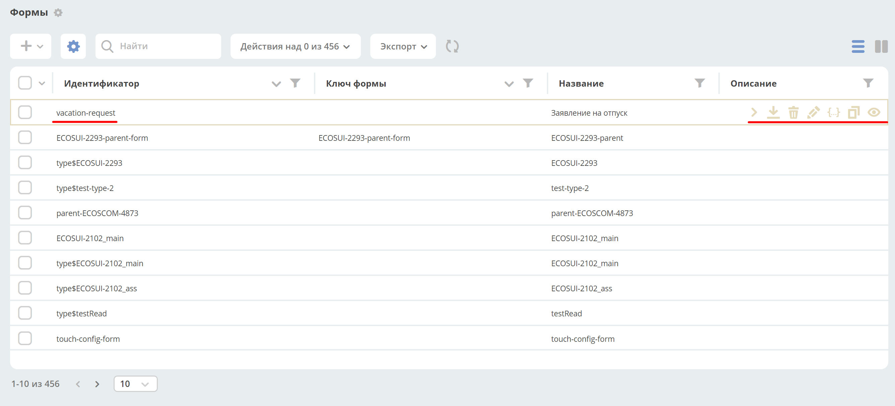{kind=link}
Проверим – при создании заявления на отпуск инициатором автоматически проставляется текущий пользователь:
{kind=link}